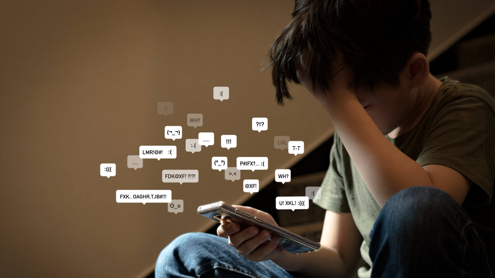

3 - Consecuencias
Las consecuencias del ciberbullying son variadas para cada participante dependiendo de su rol, pero en general podemos mencionar las siguientes:
Tipos de Consecuencias:
-
Desconfianza y conflictos en el entorno:
Las agresiones pueden provenir de personas conocidas o desconocidas , lo que puede llevar a que la víctima desconfíe de su entorno y tenga conflictos en sus relaciones sociales.
-
Aislamiento social:
Las víctimas de ciberbullying pueden aislarse debido al miedo y la desconfianza, lo que lleva a una mayor soledad y desconexión social, agravando problemas psicológicos y emocionales.
-
Problemas psicológicos:
La víctima puede experimentar miedo constante y desconfianza, lo que puede desencadenar problemas psicológicos como ansiedad, ataques de pánico, agorafobia o depresión.
-
Autolesiones e intentos de suicidio:
El ciberbullying puede llevar a que la víctima se sienta sin salida y pierda el control de la situación, lo que podría desencadenar pensamientos de autolesiones o incluso intentos de suicidio.
3.1 - Impacto Academico
El ciberbullying tiene un impacto muy negativo en el rendimiento académico de los estudiantes. Las víctimas experimentan altos niveles de estrés, ansiedad y depresión, lo que afecta su capacidad para concentrarse y aprender, resultando en un bajo rendimiento académico. Además, el miedo y la inseguridad pueden llevarlos a evitar ir a la escuela, aumentando el ausentismo y la pérdida de aprendizaje.
El ciberbullying también puede causar que los estudiantes se sientan aislados y participen menos en actividades escolares y sociales, afectando su desarrollo personal y social. En casos extremos, el sufrimiento puede llevar a los estudiantes a abandonar la escuela, afectando gravemente su futuro educativo y profesional.

3.2 - Roles Esenciales
Tanto los padres, maestros y amigos pueden desempeñar un rol en la prevención del ciberbullying de la siguiente manera:
-
Maestros:
Pueden intentar fomentar un ambiente escolar respetuoso entre todos, educar a los estudiantes sobre el ciberbullying y sus consecuencias, estar atentos a cambios en el comportamiento de los estudiantes y proporcionar recursos y apoyo a las víctimas.
-
Padres:
Los padres pueden hacerle saber a sus hijos que están ahí para escucharlos y hablar sobre cualquier cosa que ellos necesiten, también pueden monitorear el uso a internet y redes sociales de sus hijos y enseñarles sobre el uso responsable de la tecnología y cómo manejar situaciones de ciberbullying.
-
Amigos: Ellos pueden apoyar a la víctima al no participar ni promover el ciberbullying, también pueden informarle a un adulto si saben que alguien está sufriendo ciberbullying y hacerle saber a la víctima que está ahí para ayudarla.